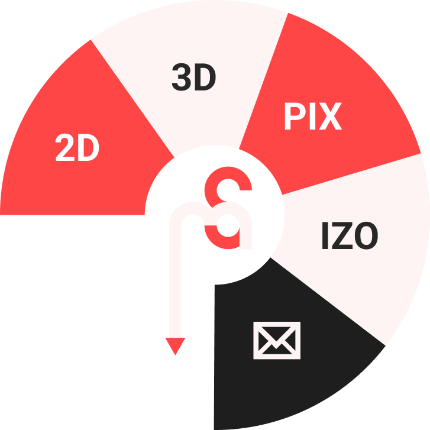

Tai studija skirta pademonstruoti Miglės portfolio
Navigacijos taikymo pavyzdys Miglės Studijai:
Paveikslėliai – akis, ausis, lūpos ir ranka – atspindi grafikos dizainerės darbo požiūrį.

STILISTIKOS PAGRINDIMAS
Šis stiliaus gidas sukurtas remiantis Bob Noorda dizaino principais
Paprasčiausių geometrinių formų taikymas – apskritimas, trikampis, stačiakampis.
Trijų atspalvių kolorito taikymas, derinant su neutraliomis spalvomis.
Lengvai įskaitoma „sans-serif“ tipografija.
Aiškus, funkcionalus dizaino sprendimas.
Nenaudojamos papildomos dekoracijos, kurios neturi reikšmės.
Juodai baltų fotografijų taikymas, su linijų efektu.